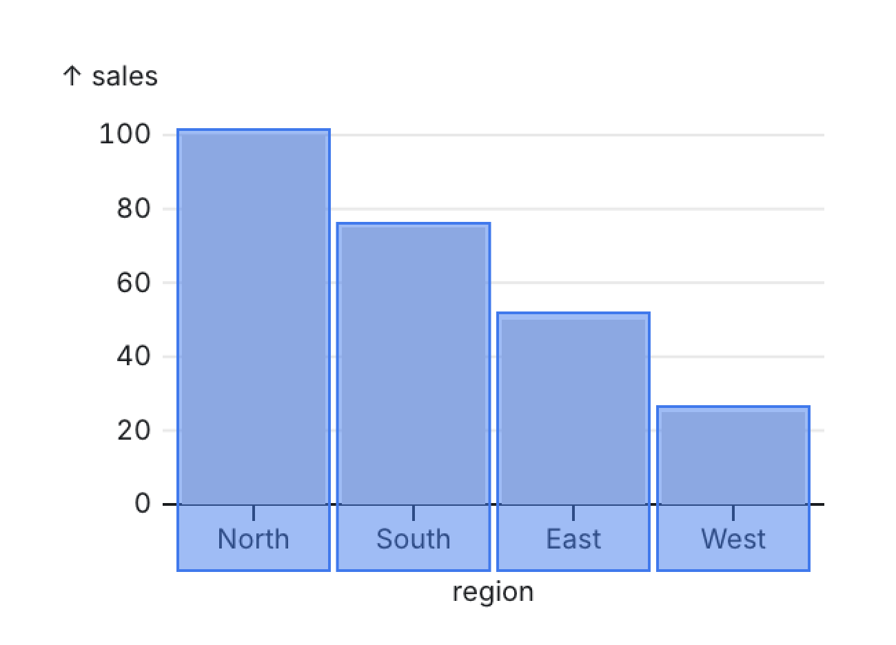
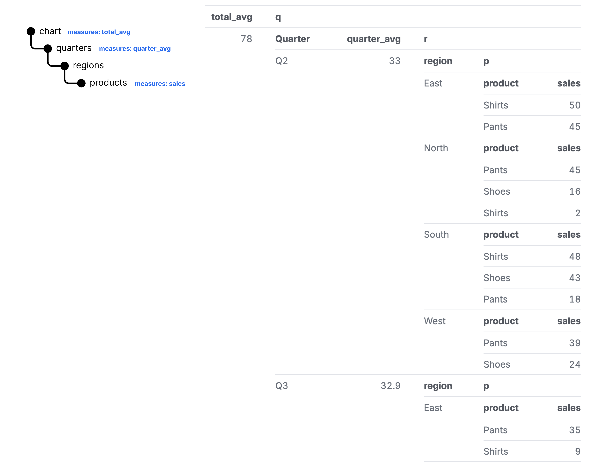

All Posts
All Posts
If only our data tools agreed
February 29, 2024 by Speros Kokenes
Data visualization is hierarchical. If that's not obvious to you, don't worry; from the way our data tools work, you would never know it.
Our data tools want us to think in rectangles. A dataset is defined by a 2D grid of rows and columns. Fit your data into those walls, and then we can talk charting. Point us to some rows and columns, and we will map that to a visual form.
But what happens when our visual forms don't fit within the confines of those walls?
Consider the humble bar chart.

What are its components? It has a set of rectangles arranged in a series.

What does the data look like for this chart? In our tabular form:

These map well together. There is 1 bar per row, creating a nice synergy.
Let's try something more complex. Add a dimension to make a stacked bar chart.

What are this chart's components? It has a series of groups of rectangles.
What does the annotation above look like? It looks like a tree.

We can treat the entire chart as a root node. Within the chart, the visuals are broken up into a series of groups. Within each group, the visuals are broken up into stacked rectangles.
How does 2D tabular data map to this visual structure? Not well. The rows no longer match the visual form we are creating. Awkward transformations are required to fit square pegs into round holes. Redundant data, like the name of each region, is repeated:

Compare that with mapping to a nested data structure:
If we pull on this idea of visualization as a tree, we can easily create denser and more interesting analyses by simply adding levels to the hierarchy.
We could add a level to group our stacked bars:
We could add another level to create rows of our grouped stacked bars:
So on and so forth. The more we do this, the harder it is to map data back to our 2D prison. The awkward reshaping and data redundency compounds.
But even worse, what if we have a level in our tree that requires its own calculations? Let's go back to our grouped stacked bar chart. What if I wanted to add a total reference line, as well as a reference line per quarter?

We now need new calculations at specific granularities of the data: our global reference line is calculated across all of the data, while our reference line per grouping is only calculated at the group level. In the tabular format, this is as awkward as you can get. There is no way to represent a value at anything but the lowest granularity of the table. Most BI tools provide a dimension-escaping mechanism for writing measures that ignore certain dimensions in a query. While this gets us the result we need, it only exacerbates the reshaping and data redundency problem:

In a tree on the other hand, assigning different measures at different granularities is completely natural. We can just define measures associated with a specific level in the hierarchy:

This naturally maps to our chart from before:
Execution
So what can we do? Well first off, we can start using a query language that will give us hierarchical data structures, like Malloy. But even once we have those structures, we need a way to express our mapping from data structure to visual form.
Can we take a lesson from the most popular nested structure renderer: HTML and CSS? The hottest web dev trend as of late is utility CSS with libraries like Tailwind CSS. In this approach, a nested HTML structure is styled by applying a series of utility classes directly on the HTML elements:

To true believers of this approach, it's never been easier and faster to craft a beautiful UI. To the haters, this disdain for separation of concerns is an affront to God.
Can we try to apply this same technique to our nested data? Let's try.
Say we have this query and data:
Let's annotate it as a plot, and mark the fields we want to map to coordinates and visual forms.
How about a reference line? Let's reorganize our query to add a level above the bars where we can calculate and draw rule for our reference line:
Let's add a level to make it a grouped bar chart, with each grouped bar chart having it's own reference line. Since our viz system is hierarchical, we can just nest a plot within a plot, just like how in Malloy we nest queries within queries:
For the dataviz nerds out there, perhaps we want to create rows of this form repeated, aka faceting. We can simply add another level for our faceted dimension and mark it as faceting in the y direction:
With a few lines of code, we can write a nested query and turn the hierarchical outputs into a complex visualization. The above is research we are doing on an experimental Plot API for Malloy's data renderer. We'd love to hear your feedback on the Malloy Slack.